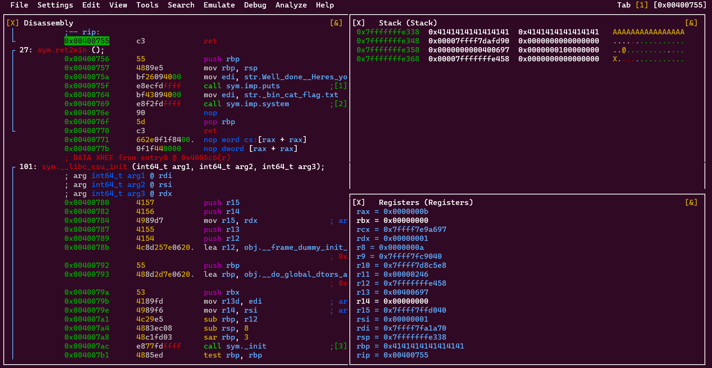

Fuzzer Internals - Part 2: Software Vulnerability Fundamentals
Table of Contents
Before getting into fuzzer internals, it’s necessary to understand the minimum concept of vulnerabilities and anything related to them. In this part, the fundamental concept is explained. I hope it will be useful for you.
Understanding Vulnerability Analysis
Vulnerability analysis is the process of identifying, assessing, and prioritizing the security weaknesses in a system. Vulnerability analysis is important for maintaining the confidentiality, integrity, and availability of the data and services that the system provides. It is a critical component of any comprehensive security strategy, as it allows organizations to proactively address potential threats before they can be exploited by malicious actors.
Classifying Vulnerabilities
A vulnerability class is a set of vulnerabilities that share the same and unique pattern and behavior in a software system. It’s quite possible for a single vulnerability to fall into multiple categories. This classification helps in understanding the nature of the vulnerability, devising appropriate mitigation strategies, and enhancing the overall security posture of the system. Generally, there are three types of vulnerabilities in a system:
- Design Vulnerabilities
- Implementation Vulnerabilities
- Operational Vulnerabilities
Design Vulnerabilities
A design vulnerability is a problem that occurs due to a fundamental mistake in the software’s design. In these vulnerabilities, the software isn’t secure because it does exactly what it was designed to do and not more. This means that the flaw isn’t due to a coding error or a specific implementation issue, but rather a problem with the overall architecture or design of the software.
For example, if a software system is designed without proper security controls or fails to consider potential threat vectors, it may be vulnerable to attacks even if it functions as intended. This could include scenarios where sensitive data is not properly encrypted, or where user permissions are not adequately managed, allowing unauthorized access to certain functions.
Implementation Vulnerabilities
In an implementation vulnerability, the program’s code is doing what it should, but there’s a security problem in the way the operation is carried out. This could be due to a variety of reasons such as improper error handling, insecure use of system calls, or incorrect assumptions about the environment in which the application runs. These vulnerabilities often arise from a lack of understanding or consideration of the potential security implications of certain code behaviors. For instance, a developer might use a function that doesn’t properly sanitize user input, leading to a potential injection attack. Or, they might neglect to implement necessary access controls, allowing unauthorized users to perform sensitive operations.
Memory Corruptions
Memory corruption is a type of implementation vulnerability that occurs when a program mismanages its own memory, leading to unexpected behavior and security vulnerabilities. Think of your computer’s memory as a big filing cabinet. Sometimes, a program may try to access a part of the memory that it’s not supposed to, like reaching into someone else’s file. This can result in system crashes, security holes, and even hackers gaining control over the system. It’s like trying to find your favorite book in the library, but accidentally knocking over all the shelves in the process.
Memory corruption in programs poses a significant risk as it not only endangers the availability of the software but also can open the door for attackers to access the desired program and the computer system.

Some common causes of memory corruption are:
- Buffer overflow: This occurs when a program writes more data to a buffer than it can hold, causing the excess data to overwrite adjacent memory locations.
- Use-after-free: This occurs when a program tries to access a memory location that has been freed or deallocated, resulting in undefined behavior or access violation.
- Double-free: This occurs when a program tries to free or deallocate a memory location that has already been freed or deallocated, causing heap corruption or memory leak.
To prevent memory corruption, programmers should follow secure coding best practices, like:
- Using safe functions that check the boundaries of buffers and strings, such as strncpy, snprintf, fgets, etc.
- Avoiding the use of dangerous functions that do not check the boundaries of buffers and strings, such as strcpy, strcat, sprintf, gets, etc.
- Using dynamic memory allocation functions that return NULL on failure, such as malloc, calloc, realloc, etc.
- Checking the return value of dynamic memory allocation functions and handling the error cases properly.
- Freeing or deallocating the memory that has been allocated dynamically as soon as it is no longer needed.
- Setting pointers to NULL after freeing or deallocating the memory they point to.
- Initializing variables before using them or assigning them default values.
- Using static analysis tools or compilers that can detect potential memory errors or warnings at compile time.
- Using debugging tools or techniques that can detect memory errors or leaks at run time, such as valgrind, gdb, etc.
Stack-Based Buffer Overflow
To gain a deeper understanding of memory corruption, let’s delve into a classic example: the buffer overflow vulnerability within the stack region of the process’s memory. Consider the following snippet of C code:
#include <stdio.h>
#include <string.h>
#include <stdlib.h>
void vuln_func() {
char name[20];
gets(name);
return;
}
int main() {
printf("Enter your name: ");
vuln_func();
}
This code includes two functions: main and vuln_func. The vuln_func is vulnerable because it uses the gets function, which does not enforce any boundary checks on the size of the memory buffer it writes into. When the main invokes vuln_func, the compiler must manage the return address for the execution flow. In other words, after a function completes its tasks, it should return to the previous function to continue execution. This return address is stored in the stack. As you guessed, if there is no boundary check, the return address can be rewritten with the desired address of the attacker.
Operational Vulnerabilities
Unlike vulnerabilities in source code, these vulnerabilities arise from how the software interacts with its environment. They include problems related to software misconfigurations and challenges arising from automated and manual processes surrounding the system. For instance, consider a website that stores a critical file in a directory without any security configuration to prevent unauthorized access. This could allow anyone to view the file listed in their browser.
References
comments powered by Disqus